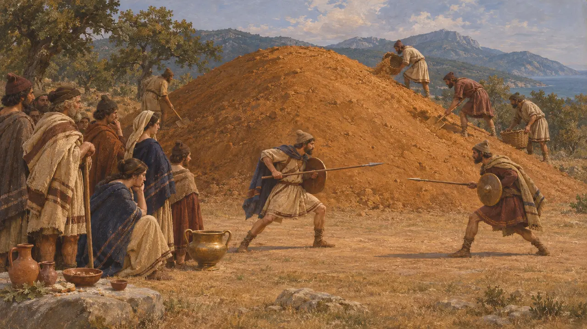
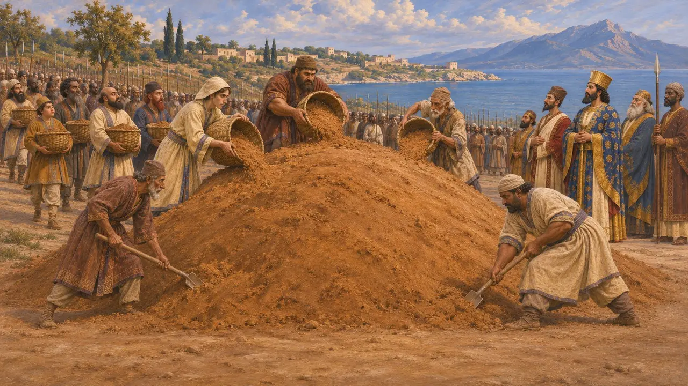
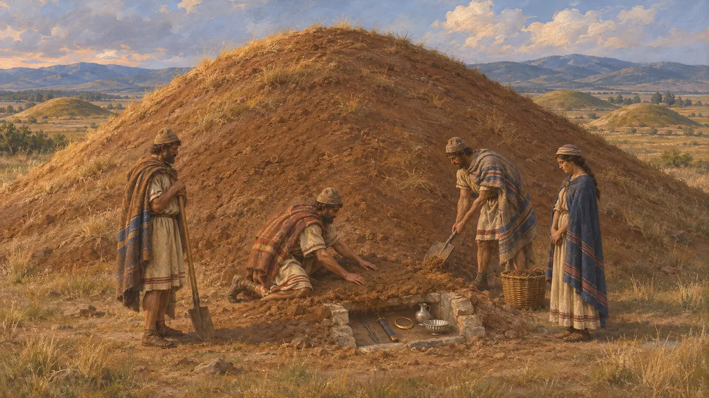
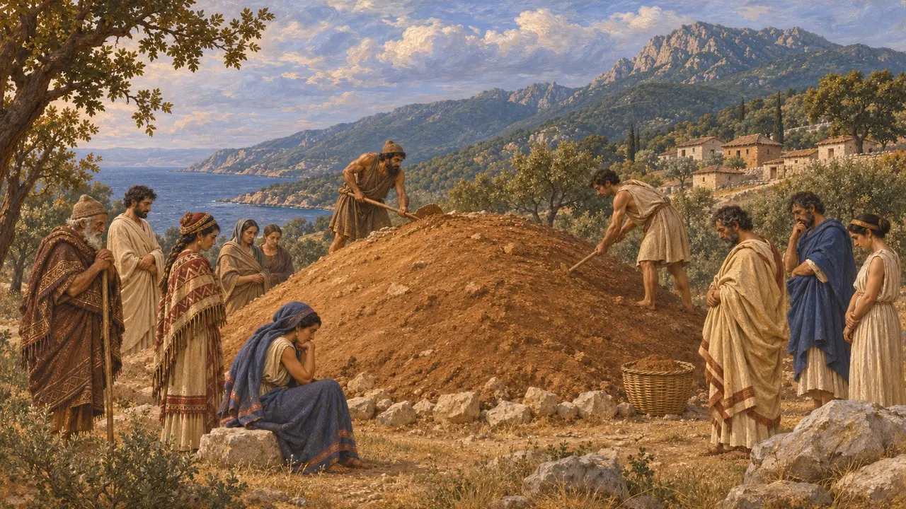

墳丘墓
死者の上に土を盛った塚、アトスで見られたトラキアの習俗、紀元前483〜480年
トラキアと北エーゲ海一帯では、有力者は土を盛り上げた円い塚の下に葬られ、しばしば饗宴や葬送競技が催された。ヘロドトスはこの風習を記している。また、紀元前480年にアトス近くのアカントスで、クセルクセスが運河工事を監督したペルシア人アルタカイエスのために全軍に塚を築かせた話も伝えている。
ゲームでは： アトスでは墓地がこの姿をとる。運び手が死者をここへ運び、埋葬されない死者は近くの家々に病をもたらす。トラキア風の呼び名はヘロドトス 5.8 に合致するが、病の規則はゲーム上の仕組みであり、史実を主張するものではない。

ヘロドトスが語るトラキア人の葬儀
古代の記述ヘロドトスによれば、裕福なトラキア人は遺体を3日間安置し、あらゆる種類の獣を生贄に捧げ、哀悼ののちに宴を催した。その後、死者は火葬されるか土に埋葬され、その上に塚が盛られ、さまざまな競技が行われた。最大の賞は一騎打ちの勝者に与えられた。
Herodotus 5.8

アカントスのアルタカイエスの塚
古代の記述ヘロドトスによれば、アトス運河の掘削を監督したアケメネス家の一員アルタカイエスは、クセルクセスがアカントスに滞在していた折にその地で没した。王は彼のために壮麗な葬儀を執り行い、全軍がその墓の上に塚を築いたという。さらにヘロドトスは、アカントス人が神託の指示に従い、彼を英雄として祀り犠牲を捧げたと付け加えている。
Herodotus 7.117

大地の塚
同時代の記録古代トラキア、すなわち現在のブルガリア、ギリシア北部、トルコのヨーロッパ部分の各地には、数千もの墳丘が残っている。プロヴディフ近郊のドゥヴァンリのものなど、紀元前6世紀末から5世紀の墳丘を発掘すると、武器、金の装身具、銀の器を伴う埋葬が見つかり、その中にはアケメネス朝の食器を模した形のものもあった。これらは、ヘロドトスが描く習俗を共有した支配層の存在を示している。
Z. Archibald, The Odrysian Kingdom of Thrace, 1998

アトスの慣習は誰のものだったか
係争中ヘロドトスはトラキア人を一つの民族として扱いながらも、異なる儀礼を持つ部族を列挙している。たとえばクレストン人の北に住む者たちでは、寡婦たちが墓前で死ぬ栄誉を競い合ったという。トゥキュディデスは、アトスの町々は混住していて二言語が話され、ペラスゴイ人、ビサルタイ人、クレストン人、エドノイ人が少数のギリシア人と並んで暮らしていたと述べる。ヘロドトスはアルタカイエスの塚をトラキア式とは呼んでおらず、一つの慣習がこの地でどこまで行われていたかは定かでない。
Herodotus 5.3-5.5; Thucydides 4.109
出典
- Herodotus 5.8
- Herodotus 7.117
- Herodotus 5.3-5.5
- Thucydides 4.109
- Z. Archibald, The Odrysian Kingdom of Thrace, 1998